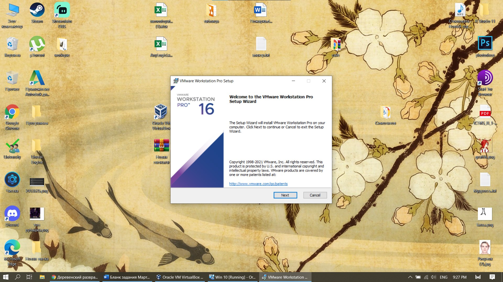
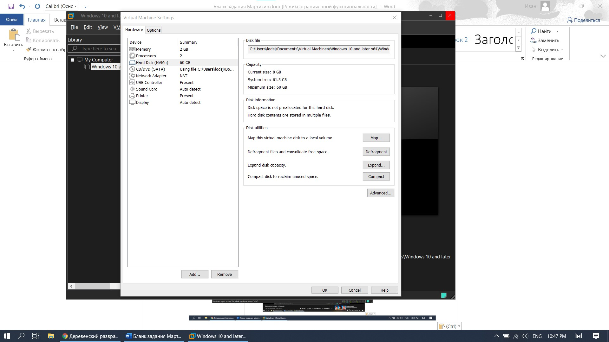

VMware |
|
VMware Workstation Player (прежнее название Player Pro) – это оптимизированное приложение для виртуализации настольных компьютеров,
предназначенное для одновременного запуска нескольких операционных систем на одном и том же компьютере без перезагрузки.
Удобный интерфейс VMware Workstation Player, а также широкий выбор поддерживаемых операционных систем и гибкие возможности
переноса ВМ существенно упрощают задачу предоставления корпоративным пользователям полноценных виртуальных компьютеров сотрудниками IТ-отдела. |
| VMware Workstation Player содержит модернизированный пользовательский интерфейс, служащий для создания, запуска и оценки операционных систем
и приложений в виртуальных машинах на Windows или Linux. В VMware Workstation Player пользователь может легко взаимодействовать и обмениваться
данными между приложениями, запущенными в виртуальной машине и в реальной системе. Благодаря интуитивному интерфейсу и простой установке, VMware
Workstation Player является самым удобным способом для развертывания виртуальных машин для работников, исполнителей и заказчиков. |
| Установка программы проходит очень быстро – только лицензионное
соглашение и выбор папки для инсталляции. Стоит отметить, что программа платная. |
|  |
| Рис. 1 Установка VMware |
| Начальный экран программы имеет понятный дизайн. Все функции,
которые написаны – такой функционал и имеют. Слева есть список, в котором будут
находится наши машины и их настройки. В центре можно выбрать создание машины или запустить уже существующую. |
 |
| Рис. 2 Начальный экран |
| Для создания машины мы сперва выбираем образ для машины.
Или можно установить образ после создания машины. |
 |
| Рис. 3 Настройка машины |
| После выбора образа – сразу начинается создание машины.
Мы не выбираем сразу настройки машины – такие как размер оперативной памяти или размер диска. |
 |
| Рис. 4 Создание машины |
| Можно выделить следующие настройки машины – Сколько оперативной
памяти можно выбрать, расположение диска хранения файлов, кол-во памяти для машины.
Также как и у VirtualBox можно определить видимость подключенных usb устройств в машине.
Диск можно расширить в любой момент или разделить его на разделы. |
|  |
| Рис. 5 Настройки машины |
| В настройках запуска машины можно выбрать образ, если мы не выбрали
про создании его. Также можно выбрать категорию ОС. |
| Рис. 6 Настройки запуска машины |
| Вывод: Программа платная, но первые 30 дней пользования – бесплатны.
Работа установленной системы будет плавная и с высоким fps. Система
оптимизирована. Имеется выбор настроек и сохранения запущенного состояния машины. |